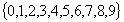
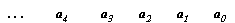
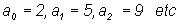
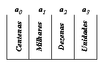

Robson Silva de Sousa
Alguma vez você se perguntou porque o número 1235 é diferente do número 5321, ou seja, porque o símbolo1235 representa uma quantidade diferente do símbolo 5321? Se alguma vez você se perguntou isto, com certeza faz parte de uma minoria.
Apesar deste assunto ser visto no ensino regular, muitos não o percebem, quase sempre por causa da abordagem tradicionalista dos professores, que por sua vez possui um tempo em sala de aula muito restrito para se estender nos conteúdos de uma série.
A justificativa encontra-se no nosso sistema de escrita numérica(sistema indo-arábico), pois ele é posicional e aditivo, isto quer dizer que a posição em que o algarismo é escrito dentro do símbolo(número) influencia no seu valor e que para saber a quantidade que o símbolo(número) representa precisamos adicionar esses valores. Com este princípio podemos escrever a simbologia de qualquer quantidade utilizando apenas os dez seguintes elementos:

Clique aqui e veja o significado de cada símbolo.
Escrevendo o símbolo(número) da direita para a esquerda(modo convencional de escrita dos números), as posições são qualificadas como descrito abaixo.

Onde:

São elementos do conjunto , por exemplo:
e
uma dezena = dez unidades
uma centena = dez dezenas
um milhar = dez centenas
uma dezena de milhar = dez unidades de milhar
.
.
.
ou seja, cada posição a esquerda vale dez vezes mais que a posição imediatamente a direita.
Então para sabermos a quantidade que o símbolo 1235 representa, basta que façamos as seguintes contas:
1235 possui:
5 unidades
3 dezenas = 3 x 1 dezena = 3 x dez unidades = trinta unidades
2 centenas = 2 x 1 centena = 2 x dez dezenas = 2 x dez x 1 dezena = 2 x dez x dez unidades = duzentas unidades
1 milhar = dez centenas = dez x 1 centena = dez x dez dezenas = dez x dez x 1 dezena = dez x dez x dez unidades = um milhar de unidades.
um milhar de unidades + duzentas unidades + trinta unidades + 5 unidades = um milhar, duzentos e trinta e cinco unidades.
Agora considere a situação em que os valores posicionais anteriormente citados fossem organizados da esquerda para a direita:

Então o símbolo 5321 indicaria:
5 unidades
3 dezenas = 3 x 1 dezena = 3 x dez unidades = trinta unidades
2 centenas = 2 x 1 centena = 2 x dez dezenas = 2 x dez x 1 dezena = 2 x dez x dez unidades = duzentas unidades
1 milhar = dez centenas = dez x 1 centena = dez x dez dezenas = dez x dez x 1 dezena = dez x dez x dez unidades = um milhar de unidades.
um milhar de unidades + duzentas unidades + trinta unidades + 5 unidades = um milhar, duzentos e trinta e cinco unidades.
Conclusão: Os símbolos 1235 e 5321 estão indicando a mesma quantidade, pois o valor relativo à posição de cada símbolo não foi alterado(apenas alteramos a sua posição na escrita) e conservamos o princípio aditivo.
Desta maneira você pode criar outros símbolos para indicar as quantidades. Por exemplo:

2135 indica mil duzentos e trinta e cinco unidades se você considerar a seguinte organização posicional e conservar os significados de unidade, dezena, centena, ...
Nota: Observe que como queremos mostrar a construção de um símbolo para qualquer quantidade existente utilizando apenas os símbolos , que são representações de quantidades primitivas, não poderíamos durante o processo utilizar o símbolo 10 para indicar por exemplo 10 unidades, pois o símbolo 10 não representa uma quantidade primitiva conhecida. Isto justifica o porque do texto acima mostrar em alguns trechos as seguintes escritas: dez unidades, dez dezenas, duzentas unidades etc.
Clique aqui para saber mais.